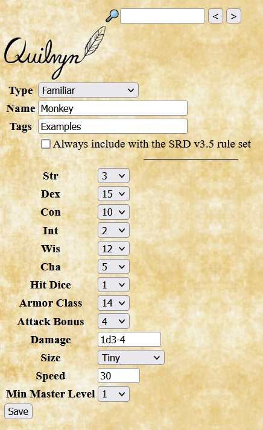
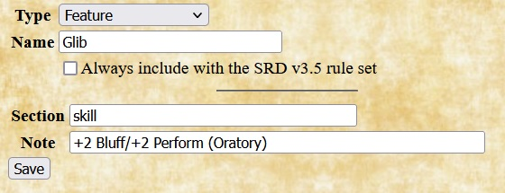
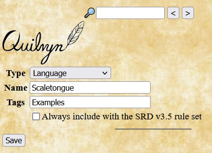
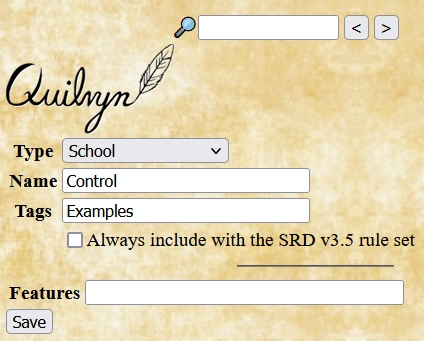
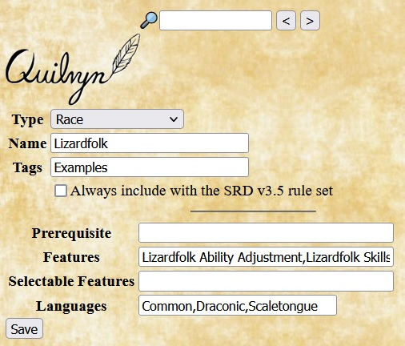
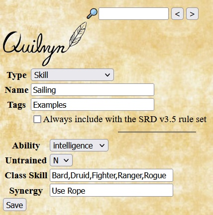
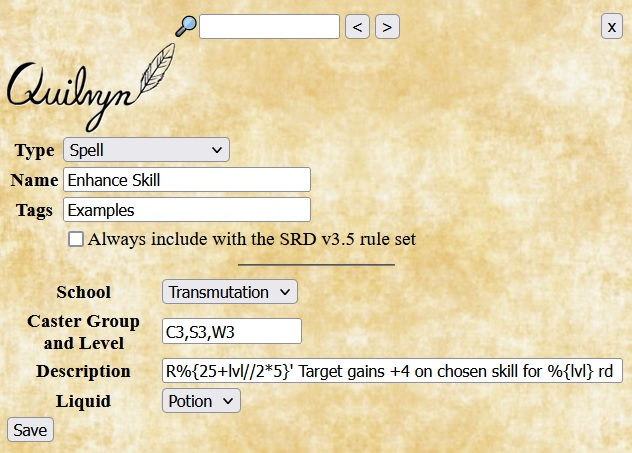
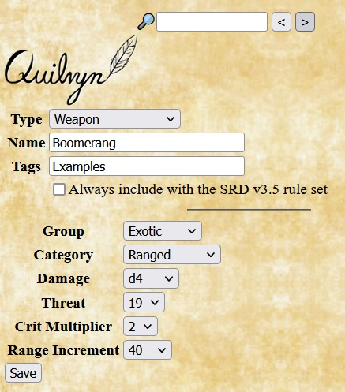

Adding Animal Companions and Familiars
Identical information is required for adding an animal companion or familiar. Along with the creature's basic attributes, Quilvyn displays fields for entering hit dice, armor class, attack bonus, damage, size, and minimum master level. Quilvyn expects the damage value to indicate the number and type of damage dice, optionally followed by a bonus or penalty. For example, an Owlbear animal companion would have a damage attribute of 1d6+5,1d6+5,1d8+2 (two claws and a bite); while a Baboon's damage would be 1d6+3. When entering armor class, attack bonus, and damage, include any bonus or penalty from elements such as dexterity, natural armor, and strength. Minimum master level is used for alternative companions that require the character to be of higher level before they can be selected.
The example shown is taken from the statistics for the monkey from the Monster Manual. Note that the monkey receives +2 size and +2 dexterity bonuses to armor class, resulting in an overall AC of 14, and that the monkey's low strength gives a -4 penalty to damage.
Adding Armors

Identical information is required for adding a custom type of armor or shield. Quilvyn displays fields for the boost to armor class gained by using the armor or shield, the item's weight category, the maximum dexterity AC bonus allowed when using the item, the penalty applied to skills such as Escape Artist, and the percentage chance of failure when casting arcane spells while using the item.
The example shown gives the values for a breastplate made from mithral, as discussed in the Special Materials section of the SRD. Mithral items reduce the item's weight by 1 category, spell failure chances by 10%, and armor check penalty by 3 while increasing the maximum dexterity bonus by 2.
Adding Classes

Identical information is required for adding a custom class, prestige class, or NPC class. Quilvyn displays fields that allow you to specify optional class prerequisites, the class hit dice, base attack and save progressions, skill points per level, class skills and features, any automatic languages known by characters with the class (e.g, druidic for druids), and information about class spellcasting.
The base attack entry gives a choice of 1/2 (increases by 1 every 2 levels, as with the wizard class), 3/4 (increases by 3 every 4 levels, as with clerics), or 1 (increases by 1 every level, as with fighters). Save entries give a choice of 1/3 (sometimes referred to as "poor") or 1/2 ("good"). Features that are acquired after level 1 (for example, the rogue Evasion feature acquired at level 2) should be preceded by the level and a colon (so, 2:Evasion). For classes that cast spells, the spell type, spell ability, and spell slots fields provide places to enter the type of spells (Arcane or Divine), the basic ability used to calculate spell DCs, and the progression of spell slots available to the caster. Each item in the spell slot box gives a spell type and level followed by a colon, then by a semicolon-separated series of <level>=<count> terms, each of which indicates how many spell slots the class receives at the given level. For example, the spell slot entry for the cleric class would include C2:3=1;4=2;6=3;9=4;13=5, indicating that clerics acquire 1 C2 slot at level 3, 2 at level 4, 3 at level 6, 4 and level 9, and 5 at level 13.
The example shows the entry for the Adept NPC class from the core rules. It has no prerequisites, d6 hit dice, and 2 skill points per level. Its base attack, fortitude save, and reflex save progressions are poor and its will save progression good. Class skills are concentration, craft, handle animal, heal, all knowledge, all profession, spellcraft, and survival. The only class features are Weapon Proficiency (Simple) and Summon Familiar, with the latter acquired at level 2. The Adept casts divine spells with wisdom as the relevant ability. An Adept receives 3 Adept0 spell slots at level 1 (and no additional Adept0 slots thereafter), 1 Adept 1 spell slot at level 1, increasing to 2 at level 3 and 3 at level 7, and so on.
Adding Deities

When adding a custom deity, Quilvyn displays fields to specify the deity's alignment, favored weapon or weapons, and domains. Multiple domains entered in the Domains text box should be separated by commas. Similarly, if the deity's favored weapon includes multiple weapons (e.g., all flails), the individual weapons should be listed in the Favored Weapons text box separated by commas.
Adding Feats

When adding a custom feat, Quilvyn displays fields to note the feat type and any requirements that must be met to select it. The feat type will typically be one of General, Item Creation, or Metamagic; you can also include Fighter in the feat type box to indicate that this feat can be selected as a fighter bonus feat. Quilvyn allows you to specify two kinds of requirements for a feat. The Prerequisite box lists any requirements that must be met to select the feat; Quilvyn generates a validation error if the feat is selected for a character who does not meet these requirements. The Implies box lists any requirements that, while not strictly required, make the feat useless if not met. For example, although the rules don't require a caster level to select it, the Combat Casting feat from the core rules is likely to be useful only to a spell caster. Quilvyn will generate a validation warning if the Implies requirements are not met. When specified, the Prerequisite and Implies fields will normally contain references to character attributes; see the discussion below for how to include these. The effects of a feat are entered separately as a feature, as described in the next section.
The example shows the entry for a general feat named Flail Expert that can be selected as a fighter bonus feat. The Prerequisite box notes that it requires a baseAttack value of at least 1 and Weapon Proficiency (Martial), and the Implies box notes that the feat is useless unless the character possesses a flail.
Adding Features
In Quilvyn, Features describe the effects of feats, classes, and racial features. When adding a rule for a new Feature, enter the section of the character sheet (one of attributes, combat, companion, feature, magic, save, or skill) where the note for the Feature should appear, then enter the note text. You can enter multiple sections and notes, but the number of sections entered must equal the number of notes. Feature notes can both reference and modify character attributes; see the discussion below for how to use this feature.
The example shows the entry for a feature named Glib with a note that appears in the skill section of the character sheet. It adds 2 to the skill modifiers of the Bluff and Perform (Oratory) skills.
Adding Languages
Adding a new language requires only specifying the name. Once added, languages can be added to a character by selecting from the language list and can be included in the list of languages automatically known by custom races.
The example shows the entry for a language called Scaletongue, used below in the example for entering a custom race.
Adding Paths

A path is a choice a character makes, other than class and race, that provides features and distinguishes from characters with similar basic characteristics. In the SRD plugin, cleric domains are the most prominent example of paths. When adding a custom path, Quilvyn displays fields that allow you to enter the group associated with the path, the level attribute that tracks the character's level in the path, lists of features provided by the path, and information about spell slots granted by the path.
The example shown adds another choice, Shadow Domain, to the domains available to clerics. It provides a single feature, Summon Shadow, at level 1 and grants no new spell slots.
Adding Schools
Adding a custom school of magic typically involves entering only the name, although Quilvyn also allows you to enter features that are acquired by a wizard who specializes in the school. Custom schools will normally be paired with custom spells that fall within the school.
The example shows the entry for a school named Control that grants no features.Adding Races
When adding a custom race, Quilvyn displays fields that allow you to enter prerequisites, features, and languages for the race. Although none of the core races have requirements, Quilvyn provides the prerequisite entry to allow you to specify a race that has, for example, a minimum strength requirement. Most races will have fixed features, such as an ability adjustment. Quilvyn also allows entering selectable features to support variations such as sub-races. Each feature in these lists will require adding a feature to describe its effects. The languages entry lists the languages that characters of this race know automatically.
The example shows the entry for the Lizardfolk character race from the Monster Manual. Features for this race are: Lizardfolk Ability Adjustment (+2 Strength/+2 Constitution/-2 Intelligence); Lizardfolk Skills (+4 Balance, Jump, and Swim, all of which are class skills); Bonus Feat (+1 General Feat); Scaly Hide (+5 Armor Class); Lizardfolk Weapons (2 claws and a bite); Hold Breath (Can hold breath 4 * constitution rds). (Most of these feature names are invented for this example; the MM simply lists the effects.) Scaletongue is included with the list of automatic languages to illustrate the use of the language added above.
Adding Skills
When adding a custom skill, Quilvyn displays fields that allow you to enter the skill's key ability, whether the skill can be used untrained, the list of classes for which the new skill is a class skill, and any synergies that the skill has with other skills.
The example shows the entry for the Sailing skill, which is related to intelligence, requires training to use, and is a class skill for several core classes.
Adding Spells
When adding a custom spell, Quilvyn displays fields that allow you to enter the spell's school, the list of classes and levels for the spell, the description of the spell, and whether or not the spell can be placed into a potion that can be drunk or an oil that can be applied. Spell descriptions can embed references to character attributes; see the discussion below for how to include these.
The example shows the entry for the transmutation spell Enhance Skill, which is a level 3 spell for clerics, sorcerers, and wizards. It can be invoked using an imbibed potion, and the description notes that spell can be cast over short range and lasts for a number of rounds equal to the caster level.
Adding Weapons
When adding a custom weapon, Quilvyn displays fields that allow you to enter the weapon's group (Simple, Martial, or Exotic), category (Unarmed, Light, One-Handed, Two-Handed, or Ranged), damage, critical threat range and multiplier, and (for ranged weapons) range increment.
The example shows the entry for a boomerang, an exotic ranged weapon with a 40' range increment that inflicts d4 damage, with critical threat and damage of 19-20/x2.